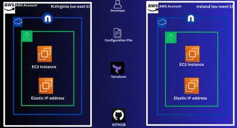

Terraform EC2 Multi-Region Module (N.Virginia & Ireland)
Project Overview:
This project demonstrates how to build a reusable Terraform module that provisions EC2 instances with Elastic IPs in multiple AWS regions. Specifically, the module deploys: One EC2 instance in North Virginia (us-east-1), One EC2 instance in Ireland (eu-west-1), One Elastic IP associated with each EC2 instance, Region-specific AMIs to ensure compatibility per region. The goal of this project is to showcase Infrastructure as Code (IaC) best practices, multi-region AWS deployments, and Terraform module design suitable for a professional GitHub portfolio.
Architecture Overview
Terraform module creation and reuse.
Multi-region AWS provider configuration.
EC2 provisioning using region-specific AMIs
Elastic IP allocation and association
Clean, readable, and production-style Terraform code
GitHub-ready documentation
Steps taken to complets this project :
1. Create a GitHub Repository
.png)
.png)
- Create a new GitHub Repository
- Enable Add README
2. Define Multiple AWS Providers
.png)
- Configure two AWS providers using aliases to support multiple regions
- This allows Terraform to manage resources in both regions within the same project
3. Create EC2 instances, Allocate and Associate Elastic IPs, Define Outputs
.png)
.png)
- Define an EC2 instance for N.Virginia using default provider
- Define an EC2 instance for Ireland using the aliased provider
- Reference region specific AMI variables
- Each EC2 instances is created independently but managed from the same module
- Create an Elastic IP resource
- Associate the Elastic IP with its corresponding EC2 instance
- This ensures each instances has a static public IP adress
- Expose useful information such as EC2 instance ID
- Output make the module easier to intergrate with other Terraform configuration
4. Initialize Terraform
.png)
Run the command to initialize the project: terraform init
- This downloads providers and prepares the module for deployment.
5.Review the Execution Plan
.png)
.png)
- Generate and Review the Terraform execution plan: terraform plan
- Verify One EC2 instance will be created in us-east-1
- Verify One EC2 instance will be created in eu-west-1
- Elastic IPs will be associated correctly
6. Apply the Configuration
.png)
.png)
.png)
.png)
- Deploy the Infrastructure: terraform apply
- Terraform will Provision EC2 instances in both regions, Allocate and attach Elastic IPs
Verify in AWS Console
.png)
.png)
.png)
.png)
- Log into the AWS Console
- Confirm EC2 instances exist in both regions
- Confirm Elastic IPs are correctly associated
- Confirm Tags are applied as expected
👤 Author
Danny Kamohelo Ntshala
Aspiring Cloud & DevOps Engineer